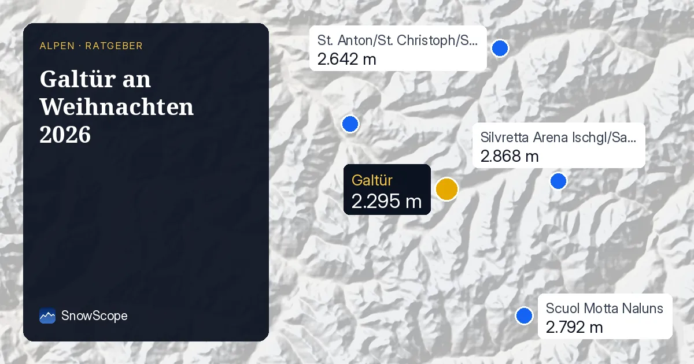
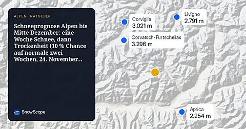

Galtür an Weihnachten 2026: 38 cm oben und mehr Schnee als üblich für Ende November
Galtür startet besser als ein durchschnittlicher Winter in den Dezember: Auf 1.962 m liegen 39 cm Schnee, normal sind Ende November 35 cm, und oben am Birkhahn sind es 38 cm. Ein üblicher 25. Dezember bringt dort 73 cm, sodass weiße Weihnachten im hinteren Paznaun sehr wahrscheinlich sind.
Die Live-Schneeprognose für Galtür in der SnowScope-AppSchneehöhen, Pulverschnee-Alarme und 3D-Karte, gratis.
Schnee heute und in den nächsten Tagen
Der Donnerstag brachte 14 cm, in sieben Tagen fielen 41 cm. Das Wochenende bleibt trocken, am Montag kommen höchstens ein paar Zentimeter dazu. Mit den kalten Nächten bleibt der Schnee gut, und die Beschneiung kann die Talabfahrt ergänzen.
Das Skigebiet Silvapark reicht von 1.628 m bis 2.295 m. Weil schon das Dorf hoch liegt, ist Galtür eines der Paznauner Dörfer, in denen der Schnee meist bis vor die Haustür reicht.
Was ein normaler Winter an Weihnachten bringt
Auf 1.962 m sind am 25. Dezember üblicherweise 73 cm zu erwarten; in einem von vier Wintern weniger als 51 cm, in einem von vier mehr als 88 cm. Am 15. Dezember liegt die übliche Höhe bei 56 cm, am Neujahrstag bei 78 cm.
Schnee lag an Weihnachten auf dieser Höhe in 100 % der Winter. Ein grünes Weihnachten gibt es in Galtür praktisch nicht; die Frage ist nur, wie tief der Pulver ist.
Warum Galtür statt Ischgl
Galtür liegt nur wenige Kilometer hinter Ischgl, ist aber ein ganz anderes Weihnachten: ein Bergdorf mit Kirche und Dorfplatz, Familienhotels, breite Pisten am Birkhahn und kaum Après-Ski-Lärm. Wer einen Tag in die große Silvretta Arena will, fährt mit dem Skibus talauswärts.
Für Langläufer und Winterwanderer ist das Tal ein Geheimtipp: Die Loipen in Richtung Silvretta-Stausee und Zeinisjoch liegen hoch und sind meist früh im Winter gespurt.
Die Feiertage planen
Die Weihnachtswoche ist in Galtür voll, aber die Pisten bleiben überschaubar. Am ruhigsten sind der 24. und der 25. Dezember; am 26. kommen die ersten Gäste der Feiertagswoche.
Wer flexibel ist, findet in der Woche vor Weihnachten günstige Preise und in diesem Jahr bereits mehr Schnee als an einem üblichen 15. Dezember. Tägliche Werte stehen auf der Galtür-Schneeseite.
Häufige Fragen
Reicht der Schnee bis ins Dorf? In den meisten Wintern ja. Galtür liegt so hoch, dass die Schneedecke im Ort meist schon im Dezember geschlossen ist, und die Talabfahrt wird zusätzlich beschneit.
Wie viel Schnee liegt normalerweise zu Neujahr? Auf 1.962 m sind es am 1. Januar üblicherweise 78 cm, in einem guten Winter auch 112 cm oder mehr.
Lohnt sich die Woche nach Neujahr? Ja: Ab dem 6. Januar wird es deutlich ruhiger, die Preise fallen, und die übliche Schneehöhe steigt weiter auf 84 cm.
Was machen Nicht-Skifahrer? Winterwandern, Rodeln, Langlaufen und das Alpinarium im Dorf, ein Museum über Lawinen und das Leben im hinteren Paznaun, füllen problemlos eine Woche.
Wie kommt man hin? Mit dem Zug bis Landeck und weiter mit dem Bus durch das Paznaun, oder mit dem Auto über die Arlbergroute; die letzten Kilometer hinter Ischgl führen durch ein enges Tal, das bei Neuschnee zuerst geräumt wird.
Kinder und Anfänger
Für Familien mit kleinen Kindern ist Galtür einer der entspanntesten Orte in Tirol. Die Übungshänge liegen nahe am Dorf, die Skischule ist überschaubar, und die Pisten am Birkhahn sind breit und eher sanft. Wer schon sicher fährt, findet an der Ballunspitze steilere Hänge und bei guter Lage schöne Varianten abseits der Piste.
Die Lage im Paznaun
Das hintere Paznaun bekommt Schnee vor allem bei Nordwest- und Nordlagen, die vom Arlberg herüberziehen. Darum hatte Galtür diese Woche mehr Schnee als viele tiefere Gebiete Tirols. Am Montag, 30. November, kommt höchstens eine kleine Ergänzung; danach entscheidet der Dezember, wie viel Pulver es an den Feiertagen gibt.
Tipps für Skifahrer
- Die Woche vor Weihnachten ist die beste Wahl für Preis und Ruhe.
- Für einen Tag Ischgl reicht der Skibus; das Auto bleibt im Dorf.
- Bei Neuschnee und Lawinenwarnstufe auf den Paznauner Lagebericht achten, die Straße kann kurz gesperrt sein.
- Mehr zur Region: Galtür im Dezember und die Seite Österreich.
Zu diesen Zahlen
Schneewerte: die SnowScope-Schneekarte und -Vorhersage von heute und unsere Bilanz von 46 vergangenen Wintern pro Skigebiet (eine Schätzung für die Fläche, keine Meldung des Skigebiets).
Offizielle Lawinenlageberichte: Lawinenwarndienst Vorarlberg
Diesen Bericht zitieren
Für Forschung, Lehre oder Presse: Zahlen und Grafiken sind unter CC BY 4.0 mit dieser Quellenangabe frei nutzbar.
SnowScope (2026), Galtür an Weihnachten 2026: 38 cm oben und mehr Schnee als üblich für Ende November, https://snowscope.app/blog/de/2026/11/galtuer-weihnachten-2026-schnee-paznaun-ruhige-alternative-zu-ischgl.html, abgerufen am 2026-11-27
SnowScope (Atlas Labs). (2026, November 27). Galtür an Weihnachten 2026: 38 cm oben und mehr Schnee als üblich für Ende November. SnowScope snow reports. https://snowscope.app/blog/de/2026/11/galtuer-weihnachten-2026-schnee-paznaun-ruhige-alternative-zu-ischgl.html
BibTeX
@misc{snowscope2026galtuerweihnachten2026sc,
author = {{SnowScope (Atlas Labs)}},
title = {Galtür an Weihnachten 2026: 38 cm oben und mehr Schnee als üblich für Ende November},
year = {2026},
month = nov,
howpublished = {\url{https://snowscope.app/blog/de/2026/11/galtuer-weihnachten-2026-schnee-paznaun-ruhige-alternative-zu-ischgl.html}},
note = {Published 2026-11-27 21:43 UTC; accessed 2026-11-27}
}· CC BY 4.0 · Methoden, Daten und Werkzeuge →
Galtür: Schnee und Temperatur nach Höhe, dieser Winter vs letzter (Werkzeuge) →
Galtür folgen
Gratis: eine Nachricht, wenn Neuschnee kommt, und jeden Morgen die Vorhersage.
Weitere Schneeberichte

Schneeprognose Alpen für die nächsten 3 Wochen aus dem ECMWF-Ensemble (50 Mitglieder), NOAA GEFS und NASA MODIS: im Mittel 19,1 cm Neuschnee diese Woche (normal 17,8), dann nur 9 cm vom 1. bis 8. Dezember (normal 21,9). Isola 2000 74 % über normal, Chamonix 6 %.

Zwölf bekannte Alpenskigebiete nach ihrer üblichen Dezember-Schneehöhe an der Mittelstation und am Gipfel gereiht, aus 46 vergangenen Wintern, mit dem Boden eines schwachen Dezembers und den Wochen, die nie enttäuschen.